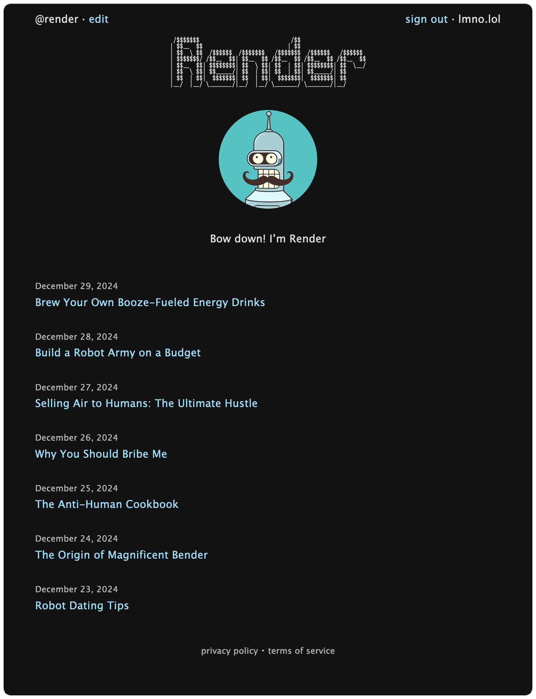

Álvaro Ramírez
Blogging minus the yucky bits of the modern web
Happy New Year! If you follow my blog, you may have noticed that I've been hosting it on lmno.lol for a while now, a blogging service I built (invitation-only until now).
Why build a blogging platform
There's been a resurgence in blogging of sorts. Wonderful in itself, but the popular platforms are fairly erm unfriendly to their readers.
These days, search results might lead you to an interesting blog post, but you're greeted with messages like:
“The author made this story available to ^^^^^^ members only. If you’re new to ^^^^^^, create a new account to read this story on us.”
Kinda strange for a platform to offload blame onto its users.
In one instance, I bit the bullet. Created an account, logged in, only to find out the specific post was reserved to paying members. “Alright,” I thought, “let’s do this.” Sadly, when I finally arrived, the content was a bit of a letdown. After all those hoops…
Meanwhile, both Privacy Badger and uBlock Origin were going haywire. Great, this thing is tracking me too. At least the site is lean… I kid, of course not.
So that's that. Off I went to build a blogging platform to exclude the yucky bits the modern web has brought to our blogs.
My blogging journey
I'm what you may call an accidental blogger. Sometime ago, I started jotting notes using plain text file sprinkled with org markup. I'd use my text editor for both writing and recall. It worked well when in front of my computer, not so much when on the move or sharing things with anyone. By that point, I decided to export my notes to HTML and post online. Over time, folks started reaching out about something read in my notes, errrm blog posts, and so by then I suppose I had become a blogger.
In 11 years of blogging, my approach hasn't changed much. I still write to the very same plain text file I used to write my notes to. I found this approach fairly accessible, with little ceremony. When I want to write, I open the usual text file and just write. HTML exporting consisted of hacky elisp cobbled together over time. While the code was nothing to rave about, it did the job just fine over the years. Having said that, it was more of a "it works on my machine" sorta thing.
Enter lmno.lol
A Little blast from the past
Remember ASCII art? Figlet? You can bring back some of that nostalgic web by adding a banner to your blog.
lmno.lol enables that via text art banners. What would you add?
# blog-text-art-banner /$$$$$$$ /$$ | $$__ $$ | $$ | $$ \ $$ /$$$$$$ /$$$$$$$ /$$$$$$$ /$$$$$$ /$$$$$$ | $$$$$$$/ /$$__ $$| $$__ $$ /$$__ $$ /$$__ $$ /$$__ $$ | $$__ $$| $$$$$$$$| $$ \ $$| $$ | $$| $$$$$$$$| $$ \__/ | $$ \ $$| $$_____/| $$ | $$| $$ | $$| $$_____/| $$ | $$ | $$| $$$$$$$| $$ | $$| $$$$$$$| $$$$$$$| $$ |__/ |__/ \_______/|__/ |__/ \_______/ \_______/|__/
Read anywhere
Needless to say, this platform has no tracking, ads, or paywalls. It also tries to stay away from bloat and uses JavaScript for optional features only. If you're wondering, all blogs include RSS FEEDS with full content.
Blogs render wonderfully pretty much anywhere.

Help sustain a better web
We have plenty of features we’d like to add. We host blogs for a small fee ($1.50 per month). This fee helps us cover hosting expenses, maintain and develop features, and keep the platform running smoothly. That’s the entirety of our transaction—no ads, no tracking, no selling of user data.
There are no paywalls here. You can read fully and freely. However, please consider becoming a paying customer, even if you don’t plan to blog yourself. Your support ensures the platform remains sustainable and independent.
As a paying customer, you’ll also get to reserve your own blog handle. By doing so, you not only support the platform but also promote an inclusive internet experience that is fast, smooth, and free of constant tracking, intrusive advertising, paywalls, and data collection.
By supporting services like lmno.lol, you prove like-minded services are not only possible but fully sustainable without deceitful tech.
I hope you like lmno.lol. Happy blogging!